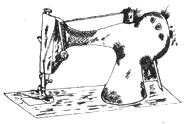

ISSUE # 36 - November/December 1975
The sewing machine articles in MOTHER NO. 32 were excellent and informative . . . but I'd like to correct a few misconceptions which they contained, and offer some additional information. I think I'm qualified to do so, since I worked my way through graduate school as a sewing machine serviceman (an occupation, incidentally, which taught me more than I'd anticipated about business ethics in this field).
[1] Sewing machines are virtually indestructible. Most wear out because they must perform difficult tasks such as riveting, drilling, punching, or other operations which require the cutting or penetration of tough material. How much force is needed to push a needle through cloth?
Keep this fact in mind should some unethical salesman try to talk you into trading in your treadle machine on the grounds that it's "noisy" and therefore worn out. The noise is inherent in the design and perfectly normal . . . and if you do turn in the old workhorse, it'll be electrified and sold to another customer.
[21 Ninety percent of service calls are the result of accumulated lint, excess oil, or loss of tension which affects the stitch . . . and even so, service on the average machine is requested only once in seven years or thereabouts. Therefore, an owner who knows how to correct these problems can almost eliminate expenditures for repairs during his or her lifetime.
The following simple steps will do much to keep your machine running smoothly: [al Vacuum or blow out the lint that gathers around the head. [b] Since moisture causes rust, the machine should be coated lightly with oil and stored in a dry place when not in use. Clean and oil the mechanism once in six months during normal use. [c] Adjust tensions only if the stitches aren't forming properly (see the illustrations on page 29 of MOTHER NO. 32). First tighten or loosen the setting for the bottom thread, so that there's a slight drag on the strand when you pull it. The correct stitch can then be produced by adjustment of the upper tension control, which is easy to get at.
[31 Old Singers are excellent, but are getting hard to find. Some of the latest inexpensive machines, however, are similar in design and are good buys (few people realize that patents are valid only for 17 years).
It's also handy to know that-in many cases-components of the newer machines are interchangeable with those of the older ones. Be wary of any dealer who tries to sell you a new model on the grounds that parts for Old Faithful aren't available . . . and remember that you can frequently save money by buying replacements from independent operations rather than name brand firms.
[41 Trade names are oftentimes a lot of baloney. When I was in the repair business 1 knew of one supplier who sold several basic models. . . to which different brand labels could be attached for the various department and chain stores. Probably the largest manufacturer of sewing machines today is Brothers of Japan.
[51 If you shop for a new machine, watch out for the "switchpitch" sales tactics practiced by some large department and chain stores. The bait to the trap is a "special" advertised at a very low price. This is, in fact, an excellent unit with a shuttle-type bobbin, similar in design to the early Singers . . . but when the machine is demonstrated (usually in the customer's home), the salesman will operate it at full speed so that it vibrates and "walks" across the table. Then the switchpitch takes place: Zigzag or round-bobbin models are shown, and the trusting buyer ends up taking a machine that costs five times or more as much as the special.
I suggest, however, that the original model can safely be purchased. Since very few people sew at full speed, and since the cloth is held down while being worked on, the possibility that the machine will "walk" in normal use is nil. Although the salesman will try to discourage you, he's required by law to sell you the special if you so demand. Otherwise, you can press charges and have him arrested for false advertising.
[61 Straight-stitch sewing machines far exceed zigzags in value and service life. The former are made of cast-iron parts with heavy bronze bushings, and are practically unbreakable. The newer zigzags, on the other hand, have many more components crammed into a housing of the same size, and a number of their parts are made of thin stamped metal. These can be bent out of alignment by accident, and tend to wear rapidly because of their smaller bearing surfaces. Such problems are difficult to diagnose and correct, and repairs are more frequent and more costly.
Zigzag stitches are used mainly for decorative purposes anyhow . . . and if such effects are desired, excellent attachments which enable straight-stitch machines to do zigzag, buttonholes, gathering, ruffling, etc., are available at nominal cost.
There's a Swedish approach to military equipment design which homesteaders should adapt for their own use. The program is called KISS . . : which stands for "Keep It Simple, Stupid."
[71 Treadle sewing machines are excellent for homesteads without electricity land are also good pieces of furniture with value as antiques). Nevertheless, I've converted many old-time units to electricity with a clear conscience. The treadle sewer does have a drawback: The flywheel takes time to build up speed, and-once a high speed is attained-hand braking is needed to stop the sewing action when desired. These problems are eliminated by the footoperated rheostat of the modern version. Besides, electric machines can be carried to sewing bees and-when not in use stored in a much smaller space.
[81 I've often been asked whether a sewing machine is worth having,.when ready-made clothing can be purchased at so-called reasonable prices. My answer is "yes", for two reasons: First, homesewn garments provide superior quality at less cost, and second, even those who don't sew from scratch will "Ind that the machine pays for itself by facilitating repair and reinforcement of storebought articles. In today's competitive market, clothing manufacturers use short-cut production methods which cause seams to split easily . . . and their output will last longer if seam ends, crotches, and other stress points are strengthened with extra stitches over those areas.
The pointers I've given here can save you both money and time that might otherwise be lost waiting for repairs to be made on your machine . . . and, since cash and extra hours are often in short supply on the homestead, you may find the information valuable.
|
 |
|
|